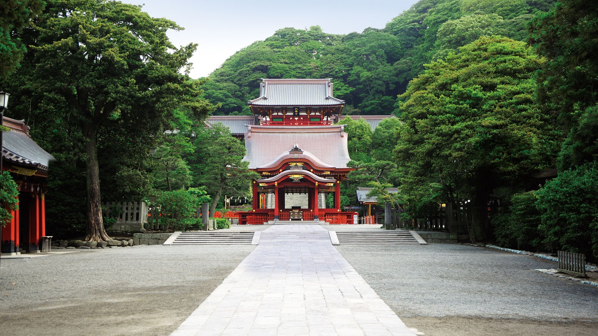

Top Kamakura Attractions
The Great Buddha
Standing 13.35 meters tall, the Great Buddha is one of Japan's most iconic statues.

Hasedera Temple
This temple is famous for its beautiful gardens and large Kannon statue.

Tsurugaoka Hachimangu Shrine
One of the most important religious sites in Kamakura, surrounded by cherry trees.
Hokokuji Temple
Famous for its tranquil bamboo groves and Zen gardens.

Yuigahama Beach
Relax by the sea and enjoy breathtaking views of Kamakura's coastline.